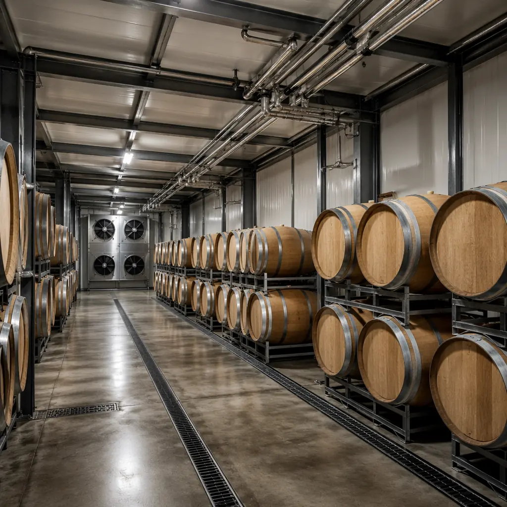
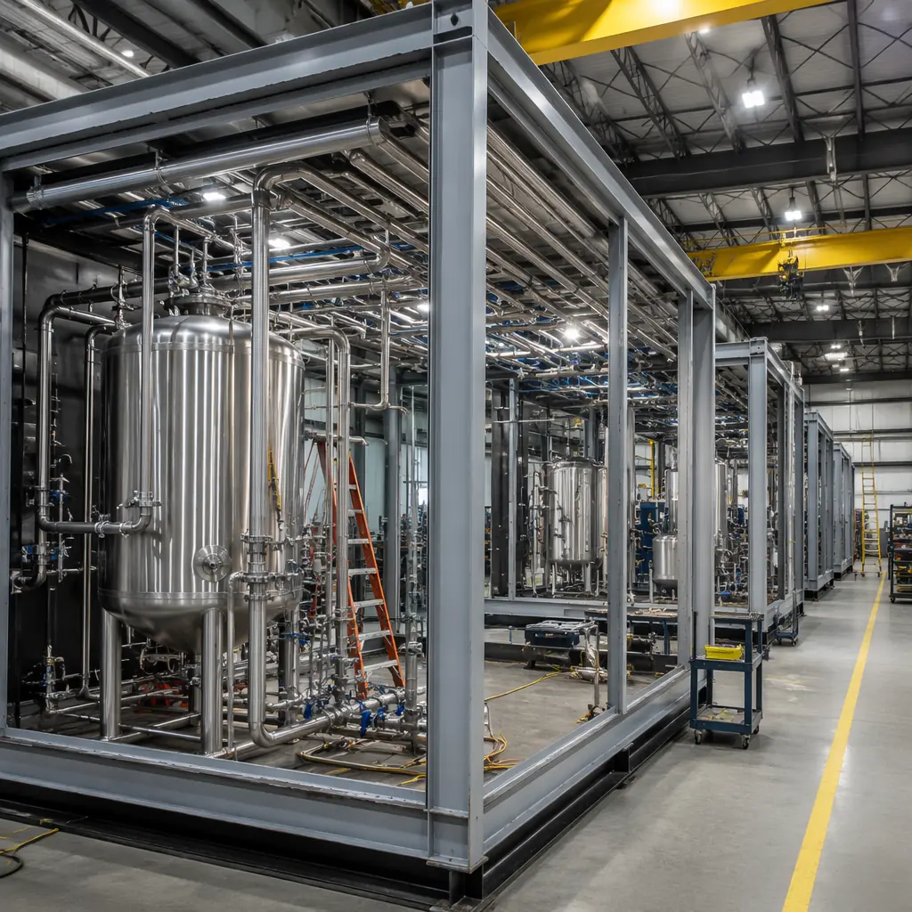
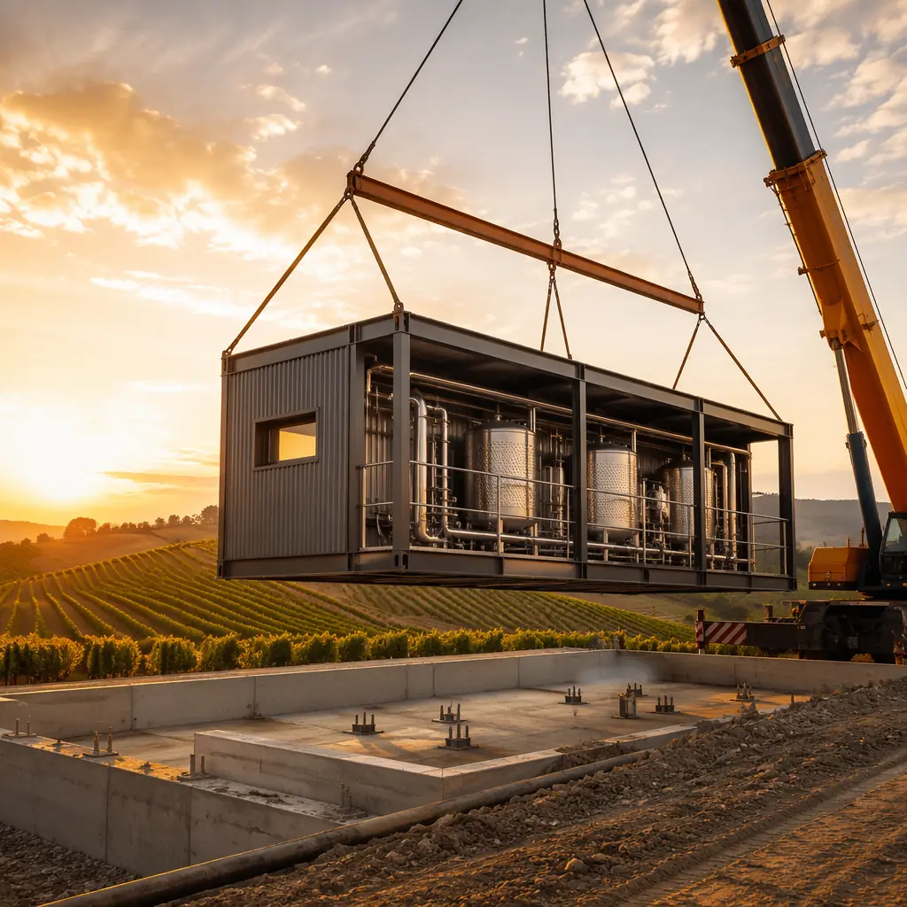

The craft beverage industry — wineries, cideries, craft distilleries, and meaderies — operates on a construction model that hasn't changed in decades: hire an architect, bid to general contractors, and endure 18–24 months of site construction before the first vintage enters the barrel room. For a winery that has already purchased vineyard land, ordered tanks and barrels, and hired a winemaking team, every month of construction delay is a month of payroll and equipment carrying costs with no product to sell. Modular construction disrupts this model by delivering temperature-controlled production facilities, humidity-managed barrel storage, and finished hospitality spaces in 10–14 months from contract to occupancy — a 40–50% schedule compression versus conventional winery construction.

Barrel Storage: The Humidity and Temperature Mandate
Wine barrel storage is an environmental control challenge disguised as a warehouse. Barrel rooms must maintain 55–65°F (13–18°C) with ±2°F stability and 65–75% relative humidity with ±5% RH tolerance. Temperature excursions accelerate wine aging unpredictably; humidity drops below 60% RH cause the "angel's share" evaporation rate to spike from the normal 2–3% per year to 5–8%, costing a 5,000-barrel winery $75,000–$150,000 in lost product annually at $30/bottle retail equivalent. Site-built barrel rooms struggle because conventional warehouse construction isn't designed for these tolerances — concrete slab-on-grade floors wick ground moisture unevenly, metal building insulation creates thermal bridges at purlins and girts, and HVAC systems sized for human comfort (not product protection) cycle too frequently to maintain steady-state conditions.
MODURA's barrel storage modules are factory-built to stability specifications that exceed standard warehouse construction:
- Thermal envelope. Factory-installed continuous insulation (R-30 walls, R-40 roof) with no thermal bridges at structural connections. Unlike site-built metal buildings where steel purlins and girts create thermal shorts every 5 feet, modular wall panels are fabricated with the insulation layer outside the steel frame, providing a continuous thermal break verified by factory infrared thermography before shipment.
- Vapor barrier integrity. Factory-installed 10-mil reinforced polyethylene vapor barrier on the warm side of the wall assembly (interior face), with factory-taped and sealed joints at all panel seams. Site-built vapor barriers rely on field taping that experiences 5–15% failure rates at seam intersections within 3–5 years. Factory seams are applied under controlled conditions with peel-adhesion testing at every joint.
- Humidity control system. Factory-integrated desiccant dehumidification with 150–300 lb/hr moisture removal capacity, ducted to maintain uniform humidity distribution across the barrel array. The system is factory-tested at design conditions (65°F, 70% RH) before shipment, eliminating the field commissioning variables that cause site-built humidity systems to require 2–3 seasons of tuning before stabilizing.
For facilities requiring cold-temperature environments beyond barrel storage — cold stabilization tanks at 28–32°F, sparkling wine riddling at 45–50°F — our cold storage facility guide covers the full temperature-controlled construction approach.

Fermentation Halls: Process Integration
The fermentation hall is where modular construction's factory MEP integration delivers the greatest advantage. A typical 20,000-case winery requires 15–25 stainless steel tanks (500–5,000 gallon capacity each) connected to glycol cooling loops, compressed air for pneumatic presses, nitrogen for inert gas blanketing, and process water for tank cleaning and sanitation. Coordinating these process utility systems in the field requires the tank fabricator, mechanical contractor, electrical contractor, and controls integrator to sequence their work perfectly — a coordination scenario that rarely unfolds without conflict.
MODURA's fermentation modules ship with process utilities pre-routed to designated tank connection points:
- Glycol cooling loops. Factory-installed Schedule 80 PVC or stainless steel glycol supply and return headers with pre-welded drop connections at each tank position. The glycol chiller (typically 20–40 tons for a mid-size winery) is factory-mounted on the module exterior with pre-insulated piping to the internal headers, eliminating the field routing of glycol lines through finished spaces.
- Process drains. Factory-sloped trench drains (1/4-inch per foot minimum) with stainless steel grate covers, sized for tank CIP (clean-in-place) discharge rates of 50–100 GPM. The trench drain is factory-cast into the module floor cassette with waterproofing membrane lapped into the drain body, eliminating the field waterproofing failures that cause fermentation hall floor leaks — the most common construction defect in winery projects.
- Ventilation. Factory-installed CO2 monitoring and exhaust system. Fermentation generates approximately 4.2 gallons of CO2 per gallon of ethanol produced. For a 5,000-gallon tank fermenting to 14% ABV, that's approximately 2,940 gallons of CO2 released over 7–14 days. Without mechanical ventilation, CO2 pools at floor level in the fermentation hall — a confined-space hazard that has caused fatalities in the wine industry. MODURA modules include factory-installed low-level exhaust fans (12-inch clearance from floor) interlocked with CO2 sensors set to alarm at 1,000 ppm and activate emergency purge at 5,000 ppm per OSHA 29 CFR 1910.146.

Tasting Room and Hospitality: The Revenue Engine
Direct-to-consumer (DTC) sales through tasting rooms now represent 60–70% of revenue for small and mid-size wineries producing under 50,000 cases annually, according to SVB's State of the Wine Industry report. The tasting room is no longer an afterthought attached to the production facility — it's the primary profit center. Modular construction supports this reality by delivering hospitality-grade finished spaces (tasting bars, event rooms, commercial kitchens for wine-pairing service, and outdoor terraces) that match the architectural quality of site-built hospitality while compressing the construction schedule.
The modular approach separates production and hospitality into distinct modules that serve different functional requirements:
- Production modules. Industrial finish, process-focused, with utility connections optimized for tank layout and workflow. These modules use durable, cleanable surfaces (epoxy floors, FRP wall panels, stainless steel) and are configured for forklift access, tank installation clearances, and process piping accessibility.
- Hospitality modules. Architecturally finished to the winery's brand standard — timber feature walls, stone flooring, vaulted ceilings with exposed steel trusses, floor-to-ceiling glass opening to vineyard views. These modules connect to the production modules at controlled interface points (double-door airlock between production and hospitality zones) but are otherwise independent structures with independent HVAC, plumbing, and electrical systems.
This separation allows the hospitality module to open for DTC sales while the production module is still being fitted out with tanks and process equipment — a phased opening approach that generates revenue 6–8 months earlier than a conventional single-building winery where the tasting room cannot open until the entire production facility is complete.
Comparison: Modular vs Site-Built for Craft Beverage
The craft beverage industry has an instructive parallel in the modular brewery sector, where prefabricated brewhouse modules are already the standard for small and mid-size breweries (5–30 BBL systems). Our brewery and distillery construction guide covers the modular brewing platform in detail, including brewhouse vessel integration, grain handling, and taproom design. The same modular principles — factory MEP integration, controlled-environment fabrication, process utility pre-routing — apply equally to wineries, but with the added complexity of long-term barrel storage environmental control that breweries don't require.
For developers and investors comparing modular to conventional construction across beverage facility types, our modular vs traditional construction comparison provides cost, schedule, and quality benchmarks. The ROI developer's guide includes beverage-specific financial models accounting for DTC revenue acceleration, reduced construction-phase carrying costs, and the insurance premium benefits of factory-built fire-resistant construction in facilities storing high-proof spirits.

Energy Performance and Operating Costs
Wineries carrying 2,000–10,000 barrels face annual HVAC energy costs of $40,000–$120,000 for barrel room conditioning alone, depending on local climate and utility rates. The factory-built thermal envelope described above — continuous insulation with no thermal bridges — reduces barrel room HVAC energy consumption by 25–35% compared to a site-built metal building with equivalent R-value labeling. The reason: labeled R-value (center-of-cavity) doesn't capture thermal bridging losses, which can degrade whole-wall R-value by 30–50% in steel-framed buildings. Factory-fabricated modular panels with exterior continuous insulation eliminate this degradation, delivering an effective R-value that equals the labeled R-value.
The sustainability implications extend beyond energy cost. Our energy efficiency guide covers the full range of modular building energy performance, including the embodied carbon analysis that is increasingly relevant to wineries pursuing organic, biodynamic, or Sustainability in Practice (SIP) certification.
Scalability: From 5,000 to 50,000 Cases
Modular winery construction is inherently scalable. A 5,000-case winery might start with two production modules (one fermentation, one barrel storage) and one hospitality module. As production grows to 15,000 cases, additional barrel storage modules can be connected to the existing infrastructure through pre-engineered module-to-module connection points. At 50,000 cases, the facility can expand laterally with additional fermentation and processing modules while the original modules continue operating — no demolition, no production downtime, no temporary facilities. This phased expansion model aligns capital expenditure with revenue growth, reducing the developer's risk of overbuilding capacity that takes years to fill. For a deeper treatment of modular building expansion strategies, see our building additions and expansions guide.